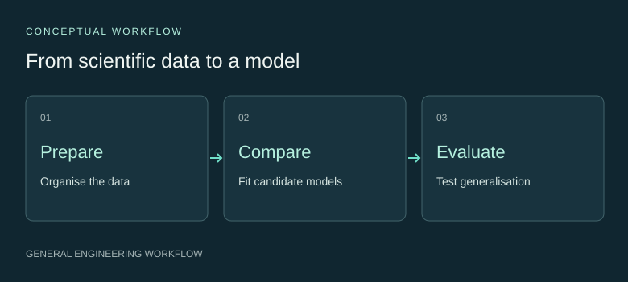

Scientific ML & surrogate modelling
I built and tested Python models that estimate thermal conductivity for furnace heat-loss calculations and insulation design.
Predict conductivity between simulation runs
A surrogate is a simpler model that learns from detailed simulations and estimates thermal conductivity without rerunning them.
I worked on using those estimates to model furnace heat loss and compare insulation designs.
Fit and compare models in Python

My work
I prepared the simulation data in Python and compared ridge regression, Gaussian processes, Extra Trees and XGBoost.
- Record variable names and units in the data tables.
- Train and test models using the same data splits.
- Export fitted models as equations or tables for use in other software.
Test predictions on unseen conditions
Grouped cross-validation kept related observations in the same split. I also held back selected conditions to test predictions on unseen data.
I check how the model behaves between sampled points and at the limits of the data. I check units and values when transferring it between tools.
Use the estimate in an engineering model
A conductivity estimate lets a furnace model compare insulation designs within the conditions covered by the material model.
See how I prepared the data ↗Research Disclosure
Detailed research findings are currently restricted. This portfolio provides a high-level overview of the work, focusing on the methodologies, technical capabilities and potential engineering applications.